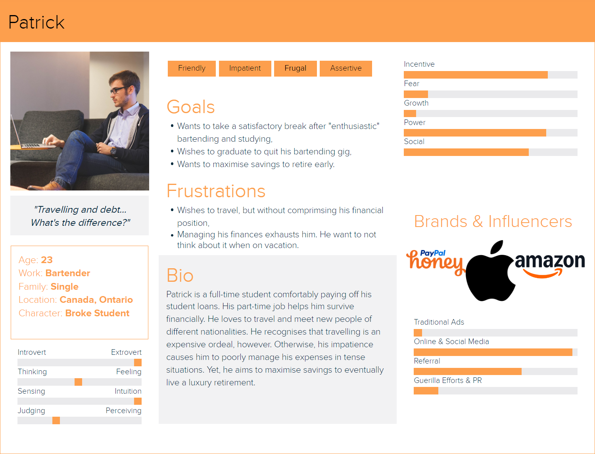
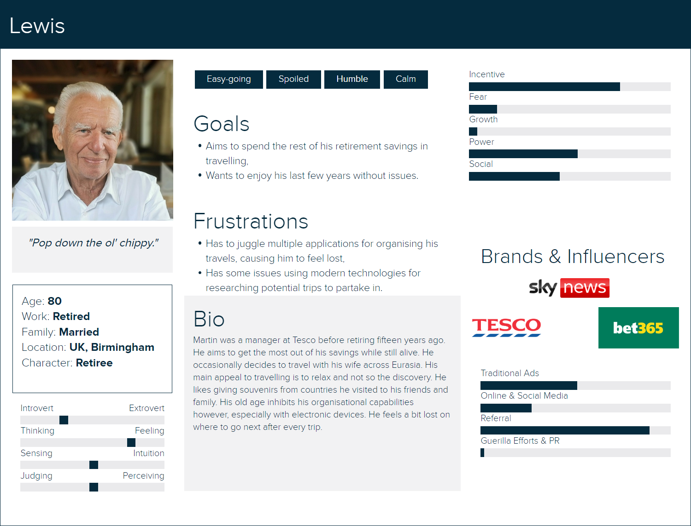
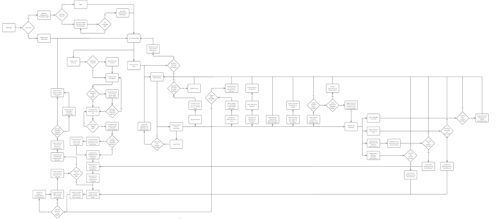
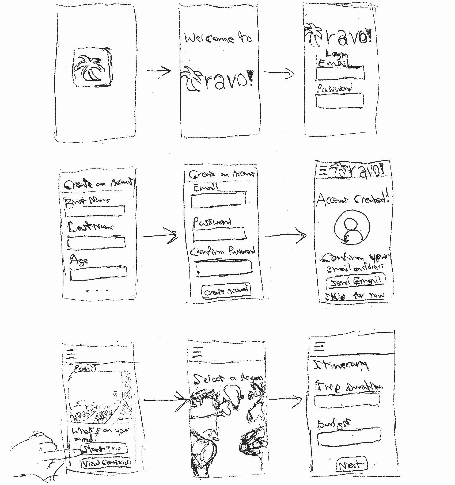

William Charron-Boyle (40264407)
Dormant industries bloomed anew after the end of the COVID-19 pandemic. The tourism industry is an example of such a subject of reinvigoration. A factor contributing to this uprising includes the recent updates in travelling restrictions worldwide. These changes increased international travel. Travelbans.org [1] displays an up-to-date list of all traveling restrictions for fifteen countries. The list suggests that the most restrictive country is China as of September 2024. However, said contry's strictest travelling rule consists of subjecting COVID-19-positive travellers to quarantine. Otherwise, the measures actually describe recommendations for foreigners to wear masks in closed spaces. The source lists most other countries as no longer enforcing COVID-19 tests for entry. Recent international travelling statistics reflect the effects of lifting these bans. UN Tourism [2] indicates that the number of tourists increased since the pandemic's end. This source indicates that tourists in 2023 make up eighty-seven percent of pre-pandemic tourists. These data do not suggest a complete recovery, but rather one that steadily progresses. Eventually observing the total recuperation of the tourism industry's clients would not be surprising. The primary observers of this expected phenomenon would be locals welcoming travellers. An increase of tourists may prove to be disturbing for said locals, however. This issue holds especially for cultural clashes between foreign and local customs. Countries under tension or violent weather may also pose a threat to tourists. A resource warning about upcomming disasters in the host country can save tourist lives. Incorporating information about local customs in said source can also avoid awkward situations. Travo! aims to provide such an up-to-date resource for all regions worth a visit. Furthermore, this super-app doubles as an all-in-one tool for reservations regarding the following items:
Travelling can offer insight in other human cultures and lifestyles. This activity requires living through what the host contry's locals experience. Tourism aims to highlight such experiences that offer the most novelty. Safety and social adequacy is key to make this process all the more relaxing. Not all cultures share the same customs, however. What one culture regards as nonchalant may be offensive in another. For instance, Japanese culture considers tipping to restaurant waiters as inappropriate. Failing to consider this fact may lead to uncomfortable social situtations. Differences exist between laws of the host country and the tourist's country of origin. Some tourists may find some foreign laws surprising. New Zealand law defines foreign fruits as illegal contraband due to biosecurity measures. This measure can put a dent in the tourist's budget and sour the experience. Unfortunately, these differences across nations can deter some from ever travelling. War and natural disasters may pose a greater threat to a tourist's well-being, however. No amount of a priori knowledge can help the tourist predict these events' developments. Live information streams describing these disasters would help tourists determine when to seek refuge. This issue applies to countries experiencing any of the following disasters:
The public media associates such coutries with danger, thus impacting their tourism industries. Rosselló et al. [3] reveal the extent of these effects for countries recovering from disasters. These researchers indicate how a volcanic erruption in Iceland promptly almost halved tourist inflow. Sudden changes in interest can hurt economies in countries that are victims of disasters. A toursist's reluctance to avoid countries prone to disasters is understandable, however. Any enjoyable touristic activity intends to amuse participants rather than exacerbating their anxieties. Countries whose militaries resist ongoing attacks experience negative economical impacts for the same reasons. Offering safety protocols when distasters strike may provide tourists some reassurance. This can benefit countries yearning funds for rebuilding what they lost to uncontrollable factors. Overall, the two factors contributing a person's distaste of travelling are as follows:
Mitigating these two issues would improve the reputation of some countries of being dangerous. This section's case study on Iceland demonstrates how significant amounts of people require assurance. A resource informing tourists about a country's state and rules can fulfill this demand.
Resources on the Web reveal different reasons for why people avoid travelling. COVID-19 took part in shaping some demographics that reject travelling due to epidemic concerns. Zheng D. et al. [4] describe how pandemic measures developed fears of travelling among some. This fear persisted even after governments lifted restrictions for controlling the spread of COVID-19. Although the researchers only covered the behaviour up to 2021, some fear can remain. The remaining audience can benefit from some reassurance in the form of danger demystification. Understanding such dangers can help this audience reconsider the reasons for their fear. Providing continuous updates on the regions these persons may visit can provide further reassurance. The information does not need only to reflect recent occurences, however. A resource providing recommendations for which regions worth avoiding can instill comfort in tourists. A second demographic exists for another type of fear other than the pandemic. This other concern is the risk of overspending. Popp et al. [5] show how money and family influence decisions regarding travelling. Prioritising either of these two over travelling makes up most excuses for not travelling. Finance management during travelling is one element that a resource can elaborate on. Tips on making the most out of a budget may convince some to travel. This advice can reveal the most affordable hotels or local vehicle rentals. Frugal audiences are another example of potential client for resources on travelling. Of course, not all travellers are as fearful as the last two audiences. Brunt et al. [6] suggest the prevelance of the "careless" tourist. The authors highlight how these travellers often become the victims of crimes. The term "tourist-trap" reflects their susceptibility to fall for convictions on poor spending decisions. The goal common to all such toursists is to relax, thus explaining this carelessness. Becoming familiar with the places these people explore can help them avoid trouble. A similar familiarisation process for understanding local cultural norms can provide similar benefits. A resource compiling information to help tourists seamlessly integrate with locals can enhance travelling. Overall, this research section revealed three prevalent categories of tourists with distinct desires. These three tourist types are as follows:
Travo! intends to cater to all three of these types of users. The upcomming sections demonstrate how our service can guarantee satisfaction regardless of user type. Travo! must provide core travelling functionalities to truly become a super-app. Another component of this research is determining the feature set necessary for competing fairly. This research component considers the features of the apps that are as follows:
Airbnb offers a public index for beds-and-breakfasts for homeowners to advertise rentals on. Each entry provides location, rental costs, and pictures of the corresponding bed-and-breakfast. The service allows the user to filter results by the following factors:
Hotels.com implements these indexing and filtering functionalities as well. This index mainly focuses on hotels as its name suggests as opposed to beds-and-breakfasts. The special features in the filtering criteria are also more specific for hotels. For instance, users can filter entries by their inclusion of breakfasts, pools and more. These filtering options reflect the expectations of travellers when looking for places to rest. As such, an optimal search system must take into consideration all these possible desires. Furthermore, filtering systems are ubiquitous among indices because they spare the user's search time. Extending personalised searches to consider both hotels and beds-and-breakfasts can maximise user inclusivity. This research up to this point satisfies the tourist's needs for lodging. The journey to said lodging presents its own slew of obstacles for tourists, however. TripIt tackles this issue in particular for flights. This service provides reminders and directions for travellers who booked flights for any airport. Said directions reflect the latest changes for flight schedules, including gate changes and cancellations. This service handles the worries of missing flights due to unclear airport instructions. This clarity can disassociate negative perceptions arising from airport chaos from the travelling experience. This service also implements an itinerary as a repository of all tickets or visas. This separation of concerns lets the traveller enjoy more what they expect: to discover. Reducing the overheads of reaching destinations to explore does not elimate all travelling problems. Travellers may wish to reach places surrounding their resting location. Methods for reaching these targets may require means of transportation other than airplanes. Wanderu aims to streamline the search process for such routes. This service provides a catalogue of bookings for buses and trains between target cities. Users can filter and order transport entries by the factors that are as follows:
This filtering system's benefits are identical to the others for hotels and guesthouses. They save tourist's time while personalising the booking to the tourist's needs. Booking.com applies this principle to all potential traveller demands regarding travelling and resting. This service provides booking indices for all of the following tourist essentials:
Such versatility approaches this service's definition to the one of a super-app. Travo! fixes this service's omission of bus and train bookings to attain this status. It implements all relevant filter functionalities to suggest options specific to the traveller's needs. Travo! effectively streamlines all booking processes that travellers rely on to reach their objectives. This service lifts booking anxieties insofar that the traveller can only focus on exploration. Said exploration does present some of its own chronophages outside of travelling, however. Planning activities to discover the particularities of a foreign region may require significant time. TripIt offers a schedule feature for organising such events, whether alone or in groups. However, Wanderlog offers more than just these planning features. This service tailor-makes activity plan suggestions according to the traveller's goals. An algorithm is responisble for determining an efficient route reaching the traveller's target destinations. The capabilities of this service do not stop at itinerary conveniences. This service can monitor habits of the traveller throughout their adventure, notably expenses. This tracking feature prevents tourists from accidentally exhausting their budget before ending their trip. The service also manages and organises flight and hotel bookings alongside travelling documents. This service is another example of a super-app for travelling. Travo! builds on top of this set of features by providing resources on cultures. This documentation covers the customs and laws particular to a traveller's target destination. The service also includes recommendations of attractions to visit and live developments of events. Said events include disasters with suggestions of regions to avoid until these events end. Taking all this research into consideration, the objectives of Travo! are as follows:
User personas will represent the collective interests of each user type partitioning our userbase. Travo! has the responsibility of satisfying the needs of all three personas. A first persona reflects the common issues of the queasy toursist. Figure 1 describes this fictional character.
Figure 1: Determination of The Needs of The Queasy Tourist.
A second persona highlights the interests of economical tourists. Figure 2 outlines a case of this type of tourist.
Figure 2: Determination of The Desires of The Frugal Tourist.
Figure 3 indicates the interests of the third audience that our service considers. This user type consists of laid-back tourists.
Figure 3: Determination of The Goals of The Laid-back Tourist.
User journeys outline the emotional evolution of personas according to their quandaries and reactions. These stories reveals the frustrations that current solutions to travelling problems can create. Minimising the extent of this pain characterises an effective solution to a problem. Travo! adheres to this principle in its design and the multiple services it provides. Figure 4 presents six independent situations that the Patrick persona may encounter. Some situations in this example present positive emotions out of the character's anticipation. It is important for Travo! to never disappoint the user in these crutial scenarios.
"I'm scared of exhausting my budget."
Ends up mostly buying insignificant trinkets and treats from duty-free stores before his departure.
Disappointment
"I will make sure not miss any opportunity for once in a lifetime purchases."
Ends up exceeding his budget and carrying too many items.
Frustration
"I need to check whether I'm falling for tourist traps or not."
Asks locals whether there are tourist traps nearby whenever exploring a new place.
Paranoid
"How can I know that I am selecting the best deals for train tickets?"
Jumps down a rabbit hole looking for the best possible prices for train tickets.
Despair
"There isn't a single app that manages all my travel needs?"
Installs multiple travelling apps each partially satisfying his desires and must jump between them.
Lost
"This app can take care of all of what I hate about travelling?"
Installs Travo!
Excited
Figure 4: Determination of The Behaviour of Patrick, a Frugal Tourist.
Note that this figure depicts one positive emotion that the user experiences. This feeling motivates the user to try out Travo! Interrupting this engagement from a flaw in the design of Travo! causes user apathy. It is vital for Travo! to not interrupt such these precious moments of interest.
Empathy maps generalise the sets of reactions that a persona may experience. These figures reveal the bigger picture of the user's stance on a problem. Travo! intends to minimise the collective impact of each source composing said problem. Figure 5 presents the empathy map for the Janet persona.
|
Where do you think we should next? Doesn't this country have violent gangs roaming around? Isn't that the place where earthquakes happen all the time? Tarantulas? No thanks. |
I don't like tours; they're too linear! I'm afraid that I might contract something from the food. Everyone else is travelling besides me! |
|
Spends excessive energy on researching which countries are the safest to explore. Can't decide which country to visit. Imagines catastrophic scenarios once arriving in a foreign country. |
Overwhelmed Confused Afraid Stuck Jelous Frustrated |
Figure 5: Determination of The Behaviour of Janet, a Queasy Tourist.
The central issue that this persona experiences becomes evident in this figure. Her fear of the unknown profoundly frustrates her.
A user flow diagram outlines the behaviour of an interface according to user decisions. The prototype for Travo! adheres to the flowchart that is as follows:
Figure 6: Determination of The Behaviour of The Interface That Travo! Employs.
Interface sketches offer some early insight in the component layout in the final product. These early designs reveal the most amount of flaws. Later iterations of these designs can exclude these issues to create better arrangments. Sketches also provide an initial sense for the navigation of the final product. Figure 7 shows some early concepts of these layouts for Travo!'s interface.
Figure 7: Revelation of Flaws in Potential Layouts in The Interface That Travo! Uses.
The logo in the page headers appear to take up significant space. Using a smaller version of the logo in later designs may improve the interface.